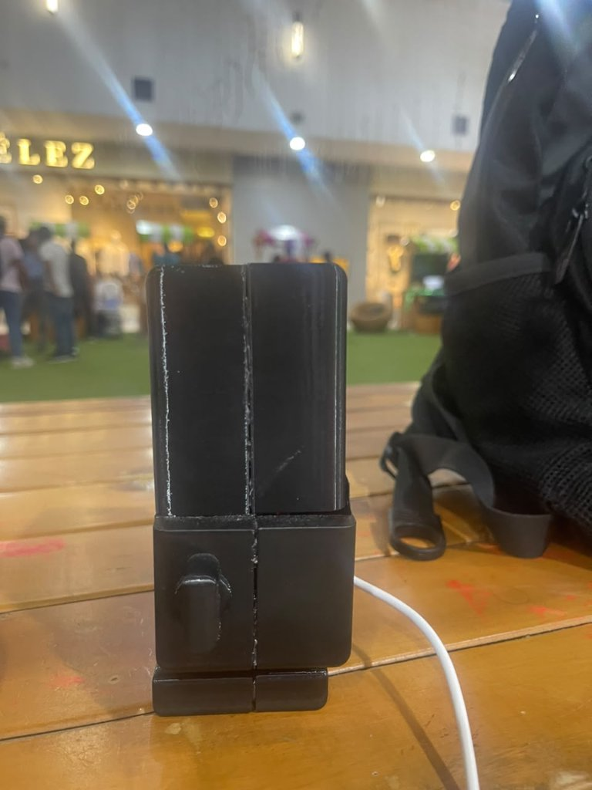

01 · HOLA, SOY GIMENA
Tu robot de escritorio con IA + Domótica
Haz scroll hacia abajo para girar mi modelo 3D y descubrir qué hace cada parte de mi cuerpo.
🧠 Gemini 3.5 Flash Lite
📺 TFT 2.4" Color
🏠 Control IoT
02 · PANTALLA TFT 2.4" (ST7789)
Mi rostro expresivo a 320×240 px
✅ QUÉ HACE
- Muestra 7 emociones animadas en tiempo real.
- Sincroniza mi boquita
wcuando te hablo. - Cambia entre rostro Pixel-Art y Anime.
❌ QUÉ NO HACE
- No es táctil (se interactúa por voz o web).
- No reproduce videos MP4 pesados; todo se dibuja en vivo por bus SPI.
03 · MICRÓFONO DIGITAL INMP441
Mi oído digital en la esquina derecha
✅ QUÉ HACE
- Capta tu voz con precisión digital I2S de 24 bits.
- Entiende órdenes naturales como «Tengo calor, prende el ventilador».
❌ QUÉ NO HACE
- No te espía ni guarda grabaciones ocultas.
- Si la API STT en la nube falla, el PC traduce el audio de respaldo.
04 · PARLANTE I2S + 19 PERFORACIONES
Mi voz sale desde el pecho
✅ QUÉ HACE
- Amplificador digital MAX98357A detrás de mis 19 agujeros.
- Habla con voz fluida y respalda el audio en el parlante del PC si falla la nube.
❌ QUÉ NO HACE
- No se queda muda si cae la API TTS (usa
edge-ttslocal). - No es un parlante de alta potencia para fiestas; es voz clara de escritorio.
05 · PERFIL LATERAL & CHASIS 3D
Impresa en dos mitades PLA

Unión lateral exacta de las dos carcasas impresas en 3D, eje cilíndrico del brazo y pies dobles de apoyo.
✅ QUÉ HACE
- Protege toda la electrónica en un cuerpo compacto de escritorio.
- Facilita abrir el chasis por la mitad para mantenimiento.
❌ QUÉ NO HACE
- No camina ni tiene motores en los brazos o pies (es un robot estacionario de compañía).
06 · ESPALDA: VENTILACIÓN & USB

Sello «Gimena» y 5 ranuras
5 ranuras superiores de refrigeración, nombre Gimena grabado en el PLA y salida inferior del cable USB blanco.
✅ QUÉ HACE
- Disipa el calor del ESP32 por las 5 rejillas verticales.
- Al conectarla por USB al PC, arranca el servidor web sola.
❌ QUÉ NO HACE
- No usa baterías que se descarguen a mitad del día; su cable USB le da energía continua.
07 · CEREBRO ESP32, DOMÓTICA & RESPALDO PC
Controla tu casa y pruébala aquí
✅ QUÉ HACE
- Activa relés físicos (
GPIO 19, 21, 22) y enchufes WiFi Tuya. - Si falla la nube, el PC respalda voz (TTS) y oído (STT) al instante.
❌ QUÉ NO HACE
- Jamás te deja tirado si se agota la cuota de una API externa.